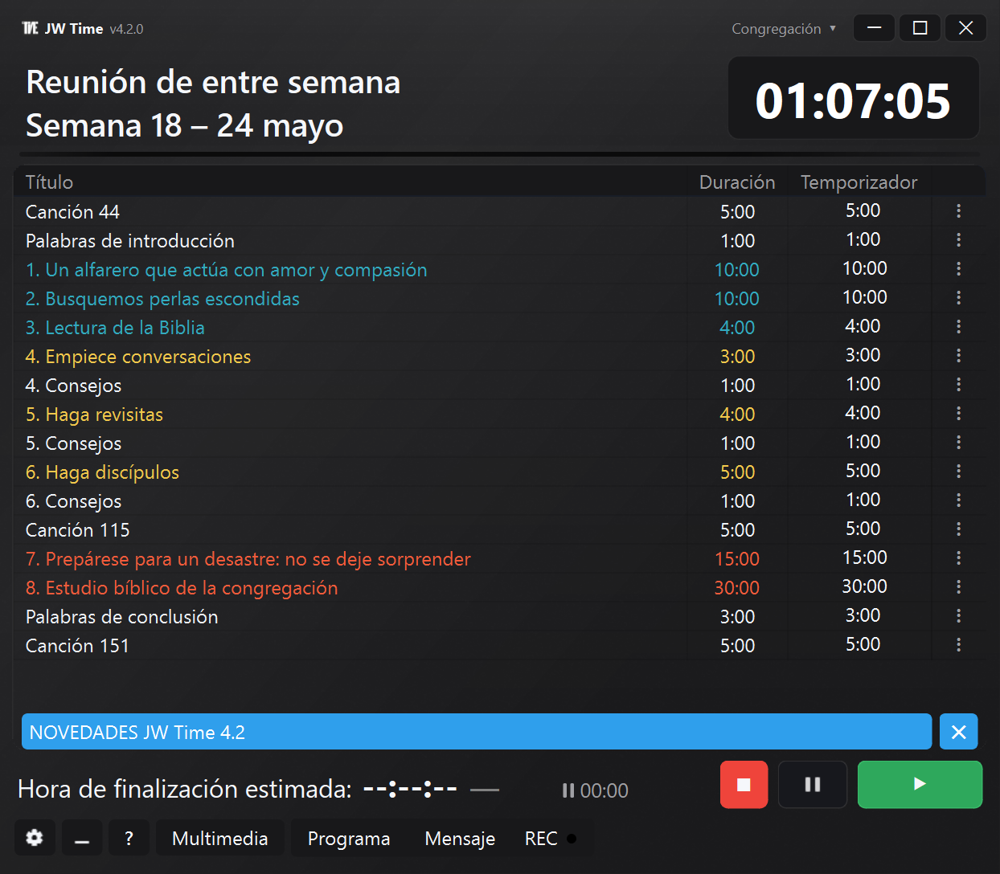
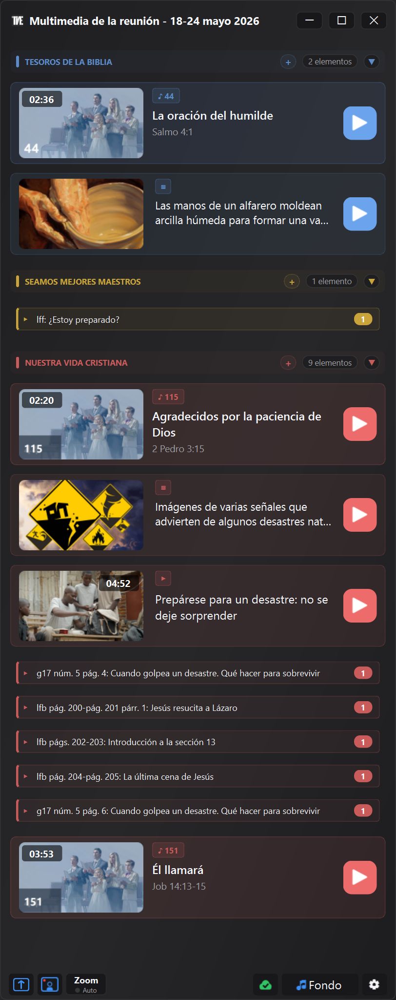

Descubra las últimas funciones y mejoras en JW Time
Última versión disponible en Store: 4.0.7
La serie 4.0 sigue mejorando la gestión del programa, la Ventana Multimedia,
los perfiles de congregación, el Monitor Web y la estabilidad general de la aplicación.
Aquí se resumen las novedades más útiles añadidas después de la versión 4.0.0.
Actualizaciones hasta la versión 4.0.7
Versión 4.0.7 MEJORADO
La nueva columna Fin puede mostrar la hora prevista de finalización de cada parte del programa.
El banner de novedades aparece solo cuando la comunicación en línea se refiere a una versión más reciente.
Los perfiles, las copias de seguridad, las ventanas y los dispositivos de grabación se restauran con más fiabilidad.
Los grupos multimedia se comportan de forma más predecible al mover elementos dentro, fuera o dentro del mismo grupo.
Versión 4.0.6 NUEVO
En la Ventana Multimedia puedes permitir URL HTTPS externas a jw.org y wol.jw.org, si lo habilitas en los ajustes.
La Prueba de conexión incluye controles más completos para el servidor local, el navegador integrado, URL externas y carpetas multimedia.
La compartición por Zoom gestiona mejor los vídeos en espera cuando la ventana de selección permanece abierta.
Puedes marcar manualmente un elemento multimedia como usado o no usado desde el menú contextual.
Versión 4.0.5 MEJORADO
Al cambiar de congregación, la Ventana Multimedia y la Pantalla Pública respetan mejor el estado guardado en el perfil.
La vista previa de imágenes y PDF gestiona mejor los cambios no guardados.
Al cerrar la Ventana Multimedia, JW Time ofrece opciones más claras sobre qué hacer con la Pantalla Pública activa.
El botón Compartir en Zoom inicia la compartición solo si aún no está activa.
Versión 4.0.4 MEJORADO
Cuando una parte supera el tiempo previsto, el temporizador muestra el exceso con el signo +, por ejemplo +0:20.
El botón Siguiente indica mejor cuándo el siguiente clic entrará en la pausa automática.
El Monitor Web conserva mejor los ajustes elegidos y ofrece un uso más limpio en modo temporizador o en pantalla completa.
Al importar una sola congregación, también se restauran la posición y el tamaño de la ventana del temporizador.
Versión 4.0.3 MEJORADO
Las imágenes y los vídeos pueden sustituir directamente el contenido activo en la Ventana Multimedia, sin pulsar antes Stop.
El Monitor Web conserva mejor el ajuste elegido por el usuario durante actualizaciones, migraciones y guardados de perfiles.
Versión 4.0.2 MEJORADO
Mejorada la importación de listas de reproducción de JW Library, incluidos medios guardados sin extensión pero con tipo de archivo declarado.
Cuando está presente en la lista, JW Time reconoce mejor el cántico inicial del discurso público.
Las etiquetas y las formas singular/plural en las ventanas relacionadas con medios siguen mejor el idioma de la aplicación.
Versión 4.0.1 MEJORADO
Mejorada la recuperación de medios oficiales de La Atalaya cuando la semana de estudio cae en el límite entre dos números.
La Ventana Multimedia también acepta arrastrar listas de reproducción de JW Library y listas de reproducción de JW Time.
En el asistente inicial, al cambiar de idioma, el texto del año de la Pantalla Pública se actualiza de inmediato al idioma efectivo.
Versión 4.0.0
Medios integrados, Pantalla Pública, perfiles de congregación, monitor web controlado de forma remota, grabación más flexible y herramientas más completas para la preparación de reuniones.
La versión 4.0.0 añade herramientas de apoyo para preparar y comprobar los contenidos disponibles, mostrarlos en la Pantalla Pública y administrar temporizadores, medios y grabación con menos pasos manuales.
Las funciones previstas para 3.0 se han fusionado en 4.0.0, junto con el nuevo sistema Media, la Pantalla Pública y los perfiles de congregación. Por eso el historial va directamente de 2.1.0 a 4.0.0.
A continuación encontrarás las principales novedades, con ejemplos concretos de lo que cambia en el uso real de la aplicación.


Vista previa de la nueva interfaz y Ventana Multimedia de JW Time 4.0.
En resumen NUEVO
Vea y organice imágenes, videos, PDF, URL, canciones y contenido oficial ya disponible con el apoyo de la Ventana Multimedia.
Muestra contenido multimedia y visual en una Pantalla Pública separada del temporizador.
Personaliza la pantalla del temporizador con ajustes preestablecidos, editores, fondos, colores, logotipo, reloj y niveles.
Utilice perfiles de congregación separados para pantallas, ventanas, servidores, grabación, medios y diseño.
Abre el Web Monitor vía QR y, si estás autorizado, consulta el cronómetro y la lista desde el navegador.
Prepare paquetes y copias de seguridad más completos para trabajar sin conexión o mover su configuración.
Preparación de reuniones y medios NUEVO
La Ventana Multimedia ofrece una herramienta de apoyo para preparar y comprobar más fácilmente los contenidos disponibles.
Nota: la Ventana Multimedia es una función de apoyo técnico. Permite preparar y comprobar más fácilmente los contenidos disponibles, pero su uso práctico siempre queda vinculado a las necesidades locales, las indicaciones de la congregación y las disposiciones.
Agregue archivos locales, imágenes, videos, PDF y URL.
Ver canciones, medios oficiales y contenido vinculado a la semana.
Organice el contenido del manual en grupos y reordene los elementos según la programación.
Comprueba con antelación qué hay disponible y qué falta.
Abre o muestra contenido en la Pantalla Pública sin buscarlo en diferentes carpetas.
Medios oficiales, listas y paquetes NUEVO
JW Time puede ayudar a organizar y reutilizar contenido oficial ya disponible y contenido local de una manera más ordenada, incluso cuando se necesita trabajar sin conexión.
Descargue y reutilice los medios oficiales que ya están presentes localmente.
Administre un caché dedicado para canciones oficiales, con comprobaciones de disponibilidad.
Importa listas y conecta material ya preparado.
Cree o utilice paquetes multimedia con archivos locales, URL, imágenes y contenido oficial.
Abra Media Checker para ver los archivos faltantes, el contenido sin conexión, los problemas y los tamaños locales.
Copie los detalles del cheque cuando necesite verificar o compartir un problema.
Nota importante: la ruta alternativa introducida en JW Time 2.1.0 se aplica a los programas semanales y de fin de semana. Para los medios oficiales no existe un segundo servidor de recuperación. Si el router, firewall, DNS o filtro de contenido bloquea a JW Time el acceso a jw.org o a sitios religiosos, la Ventana Multimedia podría no descargar los medios oficiales. Los archivos ya descargados, los medios locales y el contenido agregado manualmente siguen siendo utilizables.
Pantalla de temporizador y Pantalla Pública NUEVO
Las pantallas se han separado: el temporizador es para el conductor, la Pantalla Pública es para la sala.
Comience desde ajustes preestablecidos listos para la pantalla de temporizador.
Edite diseño, capas, colores, fondos, logotipo, reloj y textos con el editor.
Muestra imágenes, archivos PDF, vídeos y contenido visual en la Pantalla Pública.
Mantenga el cronómetro visible para el anfitrión separado del contenido que se muestra a la audiencia.
Recupera mejor ventanas fuera de pantalla y configuraciones de monitor modificadas.
Congregaciones, perfiles y copias de seguridad NUEVO
Los perfiles de congregación evitan tener que reconfigurar JW Time cuando la aplicación se utiliza en diferentes contextos.
Mantenga separados el idioma, el tema, la escala de la interfaz, las pantallas y las ventanas.
Guarde diferentes configuraciones para el servidor web, grabación, medios y diseño.
Importa, exporta y duplica perfiles para preparar configuraciones similares.
Transfiera la configuración a otra computadora con copias de seguridad más completas.
La configuración existente se migra al primer perfil.
Servidor Web y control remoto NUEVO
El Servidor Web sólo se puede utilizar para visualizar el programa o, si está autorizado, para intervenir desde el navegador.
Abra Web Monitor desde su teléfono, tableta u otra computadora en la misma red.
Utilice el QR para llegar más rápidamente a la dirección del Servidor Web.
Siga el cronómetro, el horario y la hora de finalización estimada en tiempo real.
Con el rol de Controlador puedes iniciar, detener, pasar a la siguiente parte y cambiar los valores disponibles en la lista.
Protege el editor, el controlador y el acceso remoto con PIN cuando sea necesario.
Grabación y audio MEJORADO
La grabación se ha adaptado mejor al flujo real de la reunión, donde las pausas, las reanudaciones y las comprobaciones rápidas pueden resultar útiles.
Administre pausar y reanudar la grabación de manera más directa.
Mejor control de los dispositivos de audio configurados.
Vea información útil del botón REC y los niveles de audio.
Integre grabación, medios y temporizador sin abrir paneles innecesarios.
Configuración, asistente de inicio e interfaz MEJORADO
Las configuraciones se han reorganizado por región y el asistente de inicio le ayuda a configurar las partes esenciales.
Configure el idioma, las pantallas, el servidor, la copia de seguridad y las opciones principales durante el primer arranque.
Encuentra el tema, la escala de la interfaz y el idioma del programa más fácilmente.
Utilice paneles de configuración separados para Medios, Zoom, Servidor web, Grabaciones y Copias de seguridad.
Consulte la ventana Novedades dentro de la aplicación incluso después del primer inicio.
Estabilidad y correcciones CORRECTO
Muchas correcciones se refieren a situaciones prácticas que pueden ocurrir durante el uso semanal.
Ventanas mejor recordadas y recuperación más confiable después de cambios de monitor.
Cierre más limpio de la aplicación, incluso con servidores, medios y pantallas abiertas.
Gestión más estable de la Pantalla Pública, el servidor web, los medios y la grabación.
Descargas mejoradas, caché de medios, rutas locales y archivos temporales.
Estados de la aplicación más consistentes al cambiar semanas, idiomas, congregaciones u horarios.
Versión 2.1.0
SOLUCIÓN PARA TODAS LAS CONGREGACIONES QUE NO PUEDEN DESCARGAR LOS PROGRAMAS.
Programas siempre accesibles, con nuevas opciones de descarga.
⚠️ ¿Problemas con el Servidor Web?
ADVERTENCIA: Antes de continuar, haga una copia de seguridad de la aplicación, ya que deberá desinstalarla.
Algunos usuarios que actualizan desde versiones anteriores pueden experimentar problemas con la función del servidor web. Si el servidor web no responde, siga estos pasos para limpiar las reglas del firewall:
Solución (uso único):
Prensa Inicie y busque: "Windows Defender Firewall con seguridad avanzada". Ábrelo.
A la izquierda, haga clic en Reglas de conexión entrante.
En la lista, busque entradas que contengan JWTime.
Elimínelas todas (haga clic derecho en la regla → Eliminar).
Después de eliminar las reglas, reinstale JWTime y vuelva a cargar la configuración. Luego intente utilizar WEB Monitor.
Una vez que hayas realizado esta operación, ya no necesitarás volver a realizarla.
Descarga alternativa automática NUEVO
Ruta adicional para descargar programas semanales o de fin de semana cuando los enrutadores o firewalls son restrictivos.
En la pestaña Conexiones también puede forzar la descarga de programas desde un servidor específico.
Nota: el segundo servidor solo tiene 12 semanas en memoria.
Gracias a Mauro por el valioso apoyo en el análisis de los problemas de conectividad WOL causados por configuraciones específicas del enrutador.
Monitor web mejorado NUEVO
Vea canciones y envíe mensajes en la pantalla en modo de pantalla parcial o completa.
Reconexión automática al desconectarse y protector de pantalla para proteger la pantalla conectada.
Botón pausar/reanudar grabación MEJORADO
Ahora puede pausar la grabación y reanudarla más tarde mientras mantiene un solo archivo. Ideal para excluir momentos puntuales, como oraciones, o gestionar interrupciones inesperadas.
Gestión de pantalla y ventanas MEJORADO
Gestión mejorada de ventanas de pantalla completa (Contador de tiempo e Inicio de reunión). Ahora el sistema evita superposiciones accidentales en la interfaz principal, incluso en caso de desconexión repentina del monitor externo, garantizando siempre el control total de la aplicación.
Diagnóstico mejorado MEJORADO
Prueba de conexión con datos más útiles y mensajes de error más claros cuando falla la recuperación del programa en línea.
Varias mejoras y correcciones de errores
Optimizaciones generales, mejoras cosméticas y correcciones menores para estabilidad y claridad.
Versión 2.0.0
Una versión completamente renovada con funciones avanzadas para la gestión de reuniones.
⚠️ Consejos de respaldo
Con esta versión se añaden muchas opciones nuevas que no estaban presentes en las copias de seguridad antiguas:
el nuevo formato para guardar es .jwtimesettings, pero aún puedes cargar el
archivos de copia de seguridad antiguos en formato .json. Después de configurar los ajustes de la nueva versión 2.0,
Es recomendable crear también una nueva copia de seguridad en formato .jwtimesettings, así quedarán almacenados.
Todas las opciones nuevas también.
Idioma portugués agregado (Brasil) NUEVO
Se agregó el idioma portugués (Brasil), seleccionable desde el menú Configuración.
Grabación de reuniones NUEVO
La versión 2.0 introduce una nueva función para la grabación de audio de reuniones.
Dónde está:
Ventana de configuración: nueva pestaña "Grabación"
Ventana principal: nuevo botón REC
Características principales:
Elige carpeta de destino
Prueba de grabación
Micrófono y Ajuste del volumen de audio del PC
Función "ducking" automática
Estadísticas de espacio y archivos
Control manual con botón REC
Backup para Modo OFFLINE NUEVO
Backup automático de programas semanales:
Hasta 12 semanas almacenadas automáticamente
Recuperación del programa incluso sin conexión
Funciona en segundo plano
Copias de seguridad exportadas para uso SIN CONEXIÓN:
Exportación manual de paquetes de programas
Transferible a otras PC sin Internet
Ideal para PC de sala no conectadas a la red
Gestión multilingüe:
Copias de seguridad separadas para cada idioma (IT, EN, ES, DE, pt_BR)
Sin superposición entre diferentes idiomas
Conexión, Servidor Web y Registro MEJORADO
Prueba de conexión avanzada:
Verifique la conexión a Internet y los sitios necesarios
HTTPS y verificación de certificados
Verifique el proxy del sistema
Verificación de sincronización horaria
Prueba de escritura de carpetas (registro, caché, copia de seguridad)
Registros mejorados:
Abrir directamente la carpeta de registros desde configuración
Mensajes más claros y útiles
Página del servidor web:
Soporte de temas claros/oscuros
Guardar listas manuales NUEVO
Cuando presiona el botón "Manual" en la pestaña Programas, ahora tiene dos botones nuevos:
"Guardar lista manual" - Guarde su lista personalizada
"Cargar lista manual" - Recuperar una lista guardada
Ventajas:
Crea listas totalmente personalizadas
Guardar con un nombre identificativo
Recuperar sin tener que volver a escribir
Los botones desaparecen cuando regresas a mitad de semana/fin de semana
Nuevo tema de luz MEJORADO
Se ha introducido el nuevo tema de luz, agregado completamente en la versión 2.0.
Mejoras en el tema de la luz:
Colores más legibles para la vida cristiana y los ejercicios
Selección de celdas más obvia
Colores de texto corregidos en la tabla y visualización activa
Se corrigió el defecto de la ventana emergente del himno del orador
Interfaz general:
Mejoras para una mayor claridad
Diseño más fluido y consistente
Versión 1.8.4
Actualización importante
Estudio adaptativo de Watchtower
La aplicación ajusta automáticamente la duración del Estudio de Watchtower para ayudar a cerrar
a la hora prevista para la reunión. Esta función se activa desde Configuración general.
Indicador de compensación horaria
Sistema de informes en tiempo real que muestra si la reunión llega:
Tarde (rojo): Más de 1 minuto de retraso
Tarde (amarillo): Hasta 1 minuto de retraso
Adelante (verde): La reunión avanza más rápido de lo esperado
Justo a tiempo: No se muestra ningún color
El indicador se actualiza automáticamente en tiempo real durante la reunión.
Mejoras técnicas
Sincronización del temporizador optimizada para una mayor precisión
Estabilidad mejorada de la pantalla del temporizador en monitores externos
Correcciones gráficas menores en la interfaz
Rendimiento general optimizado
Versión 1.8.0
Funcionalidad de pausa
Función de pausa
Se introdujo la Función de pausa (ZZ) que pausa el temporizador actual
mostrando el indicador ⏸. La aplicación rastrea el “Tiempo total de pausa/cambio de orador”.
Es posible:
Reanudar: Continuar desde el punto donde fue interrumpido
Reiniciar: Reiniciar el tiempo técnico acumulado
Estudio Bíblico Adaptativo
Primera versión de la función adaptativa, aplicada al Estudio Bíblico de la Congregación.
La aplicación ajusta automáticamente la duración para mantener la hora de cierre programada.
Corrección de errores
Problemas de sincronización resueltos entre la pantalla principal y el monitor externo
Mejoró la estabilidad general de la aplicación
Versión 1.1.6
Actualización de compatibilidad
Actualización de lista
Se solucionaron problemas relacionados con la tabla de temporizador, en línea con los cambios.
realizado en el sitio web oficial jw.org.
Sincronización actualizada con el nuevo formato de lista
Compatibilidad con los últimos cambios en los programas de reuniones